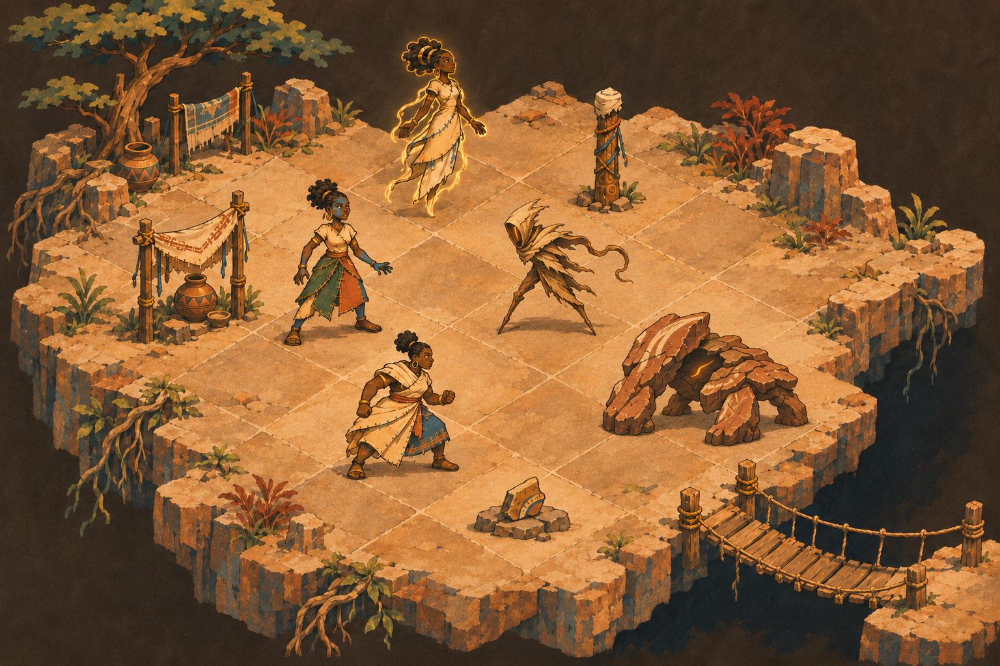

Actors and objects
Compare what you can recognize at combat scale, before reading a name.
Storybook encounter
Watch a scripted Purify Shrine battle or jump to a moment.
Encounter start
Protect the Shrine
Art proposal
Storybook figures on the battlefield

Echoes and spirits. Echoes have planted feet, visible faces and large cloth shapes. The guided spirit keeps its human outline with a lifted hem and gold edge.
Enemies. The Dust Wanderer leans into a narrow, torn shape. The Vale Brute sits low on heavy stone limbs. Use different body plans across the enemy roster so each reads before colour or initials.
Objectives. The Shrine is a low shelter, the Relic a small fragment close to the ground, and the Charge a tall, bound post. Keep each base within its cell.
The painted plate is enlarged. Try the simplified shapes at board scale with health, Guard and targeting visible.
Decisions from the token studies
Token shape and role
Party Echoes use blue circles and enemies use red circles. A mist-blue ring marks a temporary ally, the gold spirit halo encloses a noncombatant square or a joined blue circle, and the quarry has a gold diamond with readable initials. The isometric battlefield keeps its subdued floor, bridge and void.
Identity, health and action
Observer owns full names, exposed emotion, and the acting or inspected actor’s result. The board owns initials and the shared above-token HP bar and value. The gold turn ring marks the acting actor, blue marks inspection, cream corners identify the action target, and a separate shield marks Guard. Stance and halo yield when the identity, action and outcome compete for space.
Arrivals and consequences
Echoes, enemies and joined allies step in from the edge. Objective spirits and structures fade in at their cells. Shared Actions uses signed deltas when HP changes, dims a defeated actor at its cell and fractures a destroyed structure in place.
Objective states
Purify reduces future Shrine drain without restoring HP. The invulnerable Relic stays on its cell with no HP and Hold counts consecutive adjacent rounds. The Charge stays fixed through theft and recovery. A named spirit keeps its guiding objective in either form.
Calling expression
The six selected signatures appear within the body only when a supplied action expresses the Calling. Okofor uses Cross-tension, Onyamesu Shuttle threads, Aduro Driven selvedge, Sum-Okwanfo Split hem, Kra-Soro Running seam, and Okomfo Settling weft.
Study roster
Inspect an actor or object
Select on the board or in the roster to compare all three treatments.
What to look for
Hide initials and switch treatments. Can you pick out the two spirit roles, tell the enemy types apart and find the objective before the action target pulls your eye?
Switch objective states to compare the same situation across treatments. The storybook figures are simplified placeholders drawn from the painted concept. The boards are static snapshots.
Actors and objects reference · ACT-01–24
| ID | Actor or object | Coverage | Animation / UI description |
|---|